Peech has always fought like every battle was opening night: one crack of the whip, one enemy knocked off balance, and suddenly the whole formation belongs to her. Now her Legendary Relics give that performance a far more dangerous finale, turning her existing debuffs into multi-target pressure and adding relentless damage over time.
In my view, this is the version of Peech that finally rewards players for building a full Way of Chaos lineup around her. She can weaken two armored enemies, steal Physical Attack from two carries, and spread Tragic Finale through ordinary hits. The question is no longer whether she can put on a show, but whether the enemy team can survive all 2,880 Relic Shards of it.
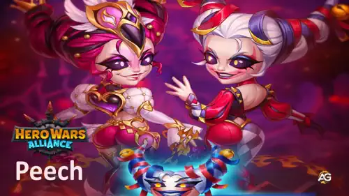
Peech Guide - Hero Wars Alliance, a game developed by Nexters.
Peech is a front-line Warrior and Control hero from the Way of Chaos. Her whip attacks push enemies back, punish high-Armor and high-Physical-Attack targets, and become broader when she starts the battle with Chaos allies. Her Relics make those strengths much harder to contain because the key debuffs can reach two targets and feed a new damage-over-time effect.
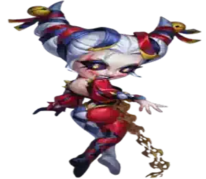
Main Class: Warrior
Roles: Warrior, Control
Position: Front Line
Main Stat: Agility
Faction: Way of Chaos
How to get Soul Stones: Not currently listed
Best Synergy: Cleaver, Kendle, Dorian, Xe'sha, Aidan, Kayla
Hydra Tier List: Not rated
Peech rewards deliberate team building. Theater of Pain gains 25% more range and area for every Chaos ally she starts with, while Stage Presence grants a larger damage bonus from Chaos allies positioned in front of her. That makes the opening lineup itself part of her damage formula.
Her main weakness is exposure. Peech fights on the front line, and The Final Act is interrupted if she receives a control effect. She can dominate once her setup begins, but she still needs protection, sustain, or enough Health to keep the performance going.
Peech Overall Rating in the Meta
This quick rating reflects Peech's current value after Legendary Relics, including her control, damage pressure, Chaos scaling, and dependence on the right allies.
Crowd Control (CC): ⭐⭐⭐⭐☆ - Knockback, movement restriction, and multi-target debuffs let her disrupt several layers of an enemy formation.
Damage Output: ⭐⭐⭐⭐⭐ - Strong Physical Attack scaling, three-hit area damage, stacked buffs, and Tragic Finale give her sustained pressure.
Team Synergy: ⭐⭐⭐⭐⭐ - Both Theater of Pain and Stage Presence directly reward Chaos allies, while her debuffs amplify the whole team.
Self-Sufficiency: ⭐⭐⭐☆☆ - She can steal Physical Attack, but her front-line position and vulnerability to control mean she still needs support.
Peech Pros and Cons - Hero Wars Alliance
✅ Pros
Strong area damage and knockback from a three-hit first skill.
Reduces Armor while boosting an eligible ally's best attack stat.
Legendary Relics double the targets of two major debuffs.
Excellent scaling in dedicated Way of Chaos teams.
Tragic Finale adds persistent pressure throughout long battles.
❌ Cons
Front-line positioning exposes her to damage and control.
The Final Act is interrupted when Peech is controlled.
Her best range and damage bonuses require the right starting lineup.
Reaching Show Must Go On requires the expensive Level 30 Relic milestone.
Peech Talisman Max Stats Comparison
Peech Max Stats with Talisman of Actress and Talisman of the Acrobat
Stat
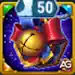
Talisman 1 Talisman of Actress
Talisman 2 Talisman of the Acrobat
Intelligence
3,745
3,745
Agility
16,403
14,403
Strength
4,649
4,649
Health
920,293
1,030,293
Physical Attack
141,099
121,899
Magic Attack
26,341
26,341
Armor
23,318
21,318
Magic Defense
10,625.5
10,625.5
Dodge
6,810.3
6,810.3
Armor Penetration
50,018
50,018
Crit Hit Chance
867.1
8,457.1
Crushing
17,101
17,101
Peech Talisman Guide - Hero Wars Alliance
Talismans do not work like skins. Skin bonuses remain active after they are upgraded, but only the talisman Peech equips contributes its stats in battle. That choice changes her role: Actress maximizes every Physical Attack formula, while Acrobat trades part of that damage for a much safer front-line build.
1 - Talisman of Actress
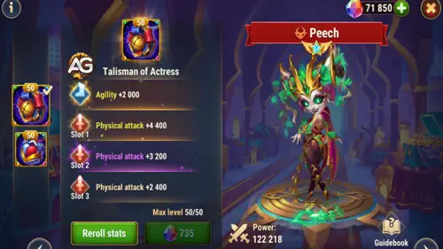
Talisman of Actress, Hero Wars Alliance.
At Level 50, Talisman of Actress gives +2,000 Agility. Because Agility is Peech's main stat, that produces +6,000 Physical Attack and +2,000 Armor. Its three rerolls add another +13,200 Physical Attack, giving this build a total advantage of 19,200 Physical Attack over Talisman of the Acrobat.
Table: Peech Talisman of Actress Main Stat
1 - Talisman of Actress
Total Main Stat
Agility
+2,000 +6,000 Physical Attack +2,000 Armor
Table: Talisman of Actress Reroll Slots
Slot 1
Slot 2
Slot 3
Total Reroll Bonus
Physical Attack +4,400
Physical Attack +4,400
Physical Attack +4,400
Physical Attack +13,200
2 - Talisman of the Acrobat
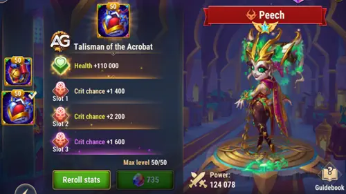
Talisman of the Acrobat, Hero Wars Alliance.
Talisman of the Acrobat gives +110,000 Health and a combined +6,600 Crit Hit Chance from its three rerolls. The final build reaches 1,030,293 Health and 8,457.1 Crit Hit Chance, making Peech much harder to remove before The Final Act and her Relic effects can build momentum.
Table: Peech Talisman of the Acrobat Main Stat
2 - Talisman of the Acrobat
Total Main Stat
Health
+110,000
Table: Talisman of the Acrobat Reroll Slots
Slot 1
Slot 2
Slot 3
Total Reroll Bonus
Crit Hit Chance +2,200
Crit Hit Chance +2,200
Crit Hit Chance +2,200
Crit Hit Chance +6,600
Alexandre Tips: I recommend Talisman of the Acrobat for most competitive front-line teams. Peech loses 19,200 Physical Attack, but the extra Health and enormous Crit Hit Chance increase help her survive long enough to apply her new Relic effects repeatedly. Choose Talisman of Actress when your team already protects her well and you want the highest possible values from every Physical Attack formula.
Peech's Legendary Relics spread her strongest debuffs, add recurring damage, and reward teams built around aggressive Chaos synergy.
Alexandre's recommended Relic path: unlock Tragic Finale at Level 1, reach Level 10 so Harlequin's Punishment affects two targets, then push to Level 20 for the two-target Final Act. Show Must Go On is powerful, but its 1,750-shard final step should come after those three milestones.
0 - Basic Attack
In-game description: Peech deals physical damage to a single target.
Skill Explanation: Her basic attack deals 100% Physical Attack. This means the equipped talisman directly changes every normal hit by 19,200 damage before enemy defenses are applied.
In-game description: Strikes the nearest enemy 3 times. Each strike deals physical area damage and slightly pushes back affected enemies. Passive: Peech increases the range of her basic attacks and the area of effect of her basic attacks and first skill by 25% for each Chaos ally the Hero starts the battle with.
Skill Explanation: Theater of Pain combines damage, area pressure, and knockback in one cast. Each hit uses 60% Physical Attack + 4,800, and the three hits can reach 268,378 total damage with Actress. The passive is just as important: every starting Chaos ally expands Peech's reach and area by 25%, so a dedicated Chaos team makes the same whip sequence much harder to avoid.
Formula with Talisman 1: Talisman of Actress
Formula 1:Damage per strike: 89,459 (141,099 × 0.60 + 4,800)
Formula 2:Total damage from 3 strikes: 268,378 (89,459.4 × 3)
Formula with Talisman 2: Talisman of the Acrobat
Formula 1:Damage per strike: 77,939 (121,899 × 0.60 + 4,800)
Formula 2:Total damage from 3 strikes: 233,818 (77,939.4 × 3)
Skill Animation Info
Keywords: Knockback, Control
Animation delay: 0.75 seconds
Area: 200
Range: 3,000
Hits: 3
Target: Nearest enemy
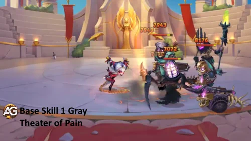
Theater of Pain strikes three times and pushes affected enemies back.
Evolution Priority:High - It is Peech's main repeatable area attack and her most direct source of knockback. Level it early so the three hits remain threatening while your Chaos lineup expands its reach.
2nd Skill - Harlequin's Punishment
In-game description: Deals physical damage to the enemy with the highest Armor. Then, for 9.0 seconds, reduces the target's Armor and increases the Physical or Magic Attack of all allies whose Intelligence exceeds that of the target by a percentage of the target's current Armor. Allies gain a boost to whichever attack stat was higher at the start of the battle.
Skill Explanation: Peech deliberately chooses the highest-Armor enemy, deals 50% Physical Attack + 8,400, cuts that Armor by 50%, and converts 50% of the target's current Armor into an attack boost for eligible allies. This is both a tank-breaking debuff and a team damage amplifier, which is why it deserves immediate investment.
Formula with Talisman 1: Talisman of Actress
Formula 1:Physical Damage: 78,950 (141,099 × 0.50 + 8,400)
Formula 2:Armor reduction: 50% of the target's Armor
Formula 3:Physical or Magic Attack increase: 50% of the target's current Armor
Formula with Talisman 2: Talisman of the Acrobat
Formula 1:Physical Damage: 69,350 (121,899 × 0.50 + 8,400)
Formula 2:Armor reduction: 50% of the target's Armor
Formula 3:Physical or Magic Attack increase: 50% of the target's current Armor
Skill Animation Info
Initial Cooldown: 2 seconds
Cooldown: 12 seconds
Keywords: Buff, Debuff
Animation delay: 1.05 seconds
Duration: 9 seconds
Range: 3,000
Target: Enemy with the highest Armor
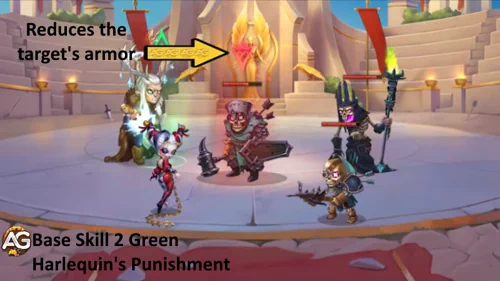
Harlequin's Punishment weakens the highest-Armor enemy and empowers eligible allies.
Evolution Priority:Very High - Few skills improve both personal damage and the whole team's damage at once. The Armor reduction also prepares the target for every physical attacker on your side.
In-game description: The skill now affects two enemies and increases allies' Physical or Magic Attack for each enemy weakened by Harlequin's Punishment. The bonuses stack. Targets are prioritized by descending Armor.
Skill Explanation: The Legendary version doubles the targets and lets the attack bonuses stack. Each target still receives the base damage calculated above, while eligible allies gain 50% of each weakened target's current Armor. Against two durable enemies, Peech can reduce both defenses and turn both Armor values into offensive power for her team.
Formula with Talisman 1: Talisman of Actress
Formula 1:Damage per target: 78,950 (141,099 × 0.50 + 8,400)
Formula 2:Stacked attack increase: 50% of Target 1 current Armor + 50% of Target 2 current Armor
Formula with Talisman 2: Talisman of the Acrobat
Formula 1:Damage per target: 69,350 (121,899 × 0.50 + 8,400)
Formula 2:Stacked attack increase: 50% of Target 1 current Armor + 50% of Target 2 current Armor
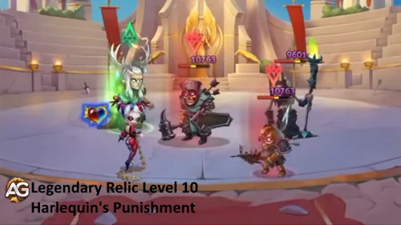
Harlequin's Punishment Legendary weakens two high-Armor targets and stacks the resulting attack bonuses.
Evolution Priority:Very High - Level 10 is Peech's first major strategic destination because doubling this debuff also creates more targets for Tragic Finale.
Relic Unlocks at Level 10 Info
Peech Relic Level 10 Cost and Stats
Info
Value
Relic Shards Necessary (Level 2-10)
280
Total Relic Shards Necessary (Level 0-10)
330
Total Physical Attack Bonus (Level 0-10)
+6,956
Total Health Bonus (Level 0-10)
+53,269
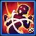
3rd Skill - The Final Act
In-game description: Links herself to the enemy with the highest Physical Attack for 6.0 seconds. The target is unable to move, and Peech steals a portion of their Physical Attack every 0.5 seconds. Peech retains the stolen Physical Attack for 6.0 seconds after the effect ends or is interrupted. This ability does not prevent Heroes from fighting but is interrupted if Peech is subjected to a control effect.
Skill Explanation: The Final Act targets the most dangerous physical attacker, holds that enemy in place, and steals 15% Physical Attack + 1,800 every 0.5 seconds. Across six seconds, that produces 12 steal attempts. Peech becomes stronger while the enemy carry becomes weaker, but a stun, silence, or other control effect on Peech interrupts the link.
Formula with Talisman 1: Talisman of Actress
Formula 1:Physical Attack stolen per 0.5 seconds: 22,965 (141,099 × 0.15 + 1,800)
Formula 2:Maximum across 12 steals: 275,578 (22,964.85 × 12)
Formula with Talisman 2: Talisman of the Acrobat
Formula 1:Physical Attack stolen per 0.5 seconds: 20,085 (121,899 × 0.15 + 1,800)
Formula 2:Maximum across 12 steals: 241,018 (20,084.85 × 12)
The Final Act restricts the strongest physical attacker while repeatedly stealing Physical Attack.
Evolution Priority:High - It is powerful indirect control and scaling against physical carries, but its interruption weakness means Harlequin's Punishment is the more reliable first investment.
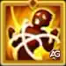
The Final Act - Enhanced Skill Legendary Relic: Level 20
In-game description: The skill now affects two enemies. Targets are prioritized by descending Physical Attack.
Skill Explanation: The Legendary upgrade links Peech to the two enemies with the highest Physical Attack. Each target uses the same steal formula, so she can simultaneously weaken two physical threats and gain Physical Attack from both. The practical value is enormous, but keeping Peech free from control remains essential.
Formula with Talisman 1: Talisman of Actress
Formula 1:Physical Attack stolen per tick from each target: 22,965 (141,099 × 0.15 + 1,800)
Formula 2:Maximum per target across 12 steals: 275,578 (22,964.85 × 12)
Formula with Talisman 2: Talisman of the Acrobat
Formula 1:Physical Attack stolen per tick from each target: 20,085 (121,899 × 0.15 + 1,800)
Formula 2:Maximum per target across 12 steals: 241,018 (20,084.85 × 12)
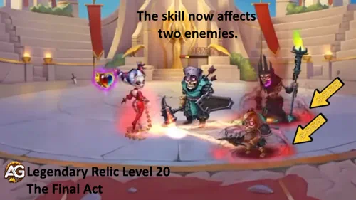
The Final Act Legendary links Peech to the two enemies with the highest Physical Attack.
Evolution Priority:Very High - Level 20 can neutralize two physical damage dealers at once while accelerating Peech's own scaling.
Relic Unlocks at Level 20 Info
Peech Relic Level 20 Cost and Stats
Info
Value
Relic Shards Necessary (Level 11-20)
800
Total Relic Shards Necessary (Level 0-20)
1,130
Total Physical Attack Bonus (Level 0-20)
+19,176
Total Health Bonus (Level 0-20)
+146,854
4th Skill - Stage Presence
In-game description: Passive skill. Each ally positioned in front of Peech at the moment of the attack increases all damage the Hero deals. The bonus is greater if an ally belongs to the Chaos faction. Only the allies that Peech started the battle with are counted.
Skill Explanation: Stage Presence rewards the team you selected before combat. Each starting ally in front of Peech adds 15% Physical Attack + 1,200 to her damage bonus, while a Chaos ally uses the stronger 15% Physical Attack + 2,400 formula. Allies summoned after the battle begins do not count.
Formula with Talisman 1: Talisman of Actress
Formula 1:Damage bonus per ally: 22,365 (141,099 × 0.15 + 1,200)
Formula 2:Damage bonus per Chaos ally: 23,565 (141,099 × 0.15 + 2,400)
Formula with Talisman 2: Talisman of the Acrobat
Formula 1:Damage bonus per ally: 19,485 (121,899 × 0.15 + 1,200)
Formula 2:Damage bonus per Chaos ally: 20,685 (121,899 × 0.15 + 2,400)
Skill Animation Info
Type: Passive
Animation delay: 1 second
Duration: 1 second
Range: 3,000
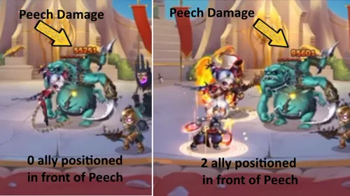
Stage Presence increases Peech's damage for starting allies positioned in front of her.
Evolution Priority:Very High - This passive improves every damaging part of Peech's kit and becomes even stronger in the Chaos teams she already wants to use.
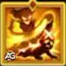
5th Skill - Tragic Finale New Legendary Relic: Level 1
In-game description: Every 15 seconds, applies the Tragic Finale effect to enemies weakened by Harlequin's Punishment. For 8.0 seconds, the effect deals physical damage over time every 2 seconds. If there are no such enemies, the effect is applied to the central enemy.
Skill Explanation: Tragic Finale gives Peech recurring pressure even between her direct attacks. It prioritizes enemies already weakened by Harlequin's Punishment, creating a natural link between her Level 1 and Level 10 Relics. The damage depends on Physical Attack, but the available data does not provide its coefficient, so an exact damage total cannot be calculated without inventing a value.
Scaling with Talisman 1: Talisman of Actress
Available scaling stat:Physical Attack: 141,099
Exact damage: Not calculable because no Physical Attack coefficient is provided.
Scaling with Talisman 2: Talisman of the Acrobat
Available scaling stat:Physical Attack: 121,899
Exact damage: Not calculable because no Physical Attack coefficient is provided.
Skill Animation Info
Application interval: Every 15 seconds
Tick interval: 2 seconds
Duration: 8 seconds
Keywords: Physical Damage, Damage over Time
Target: Enemies weakened by Harlequin's Punishment; otherwise the central enemy
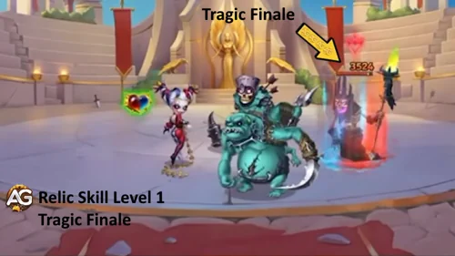
Tragic Finale applies physical damage over time to enemies weakened by Harlequin's Punishment.
Evolution Priority:Very High - It costs only 50 shards, adds an entirely new source of damage, and gives Harlequin's Punishment another strategic purpose.
Relic Unlocks at Level 1 Info
Peech Relic Level 1 Cost and Stats
Info
Value
Relic Shards Necessary (Level 0-1)
50
Total Physical Attack Bonus (Level 0-1)
+3,760
Total Health Bonus (Level 0-1)
+28,794
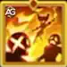
6th Skill - Show Must Go On New Legendary Relic: Level 30
In-game description: Any damage Peech deals to enemies, except for damage over time, now has a 60% chance to apply the Tragic Finale effect to the target.
Skill Explanation: Show Must Go On changes Tragic Finale from a timed effect into a threat attached to almost every direct hit. Each non-damage-over-time hit has a 60% application chance. Theater of Pain is especially exciting here because its three direct strikes create repeated opportunities to apply the effect, while existing damage-over-time ticks cannot trigger another copy.
Effect with Talisman 1: Talisman of Actress
Legendary Effect:60% chance per eligible direct-damage hit
Tragic Finale scaling stat:141,099 Physical Attack
Effect with Talisman 2: Talisman of the Acrobat
Legendary Effect:60% chance per eligible direct-damage hit
Tragic Finale scaling stat:121,899 Physical Attack
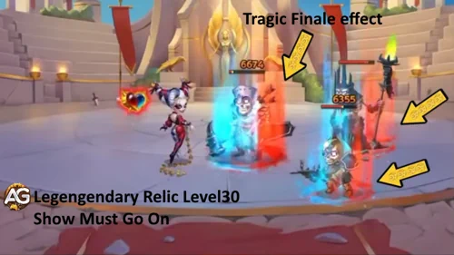
Show Must Go On gives Peech's eligible direct hits a chance to apply Tragic Finale.
Evolution Priority:Medium High - The 60% proc chance can dramatically increase sustained damage, but the final 1,750-shard step costs more than Levels 1 through 20 combined. Secure the cheaper multi-target upgrades first.
Relic Unlocks at Level 30 Info
Peech Relic Level 30 Cost and Stats
Info
Value
Relic Shards Necessary (Level 21-30)
1,750
Total Relic Shards Necessary (Level 0-30)
2,880
Total Physical Attack Bonus (Level 0-30)
+37,976
Total Health Bonus (Level 0-30)
+290,824
Peech Relic Cost Summary
Peech Legendary Relic Upgrade Milestones
Milestone
Skill
Step Cost
Total Cost
My Priority
Level 1
Tragic Finale
50
50
Very High
Level 10
Harlequin's Punishment Legendary
280
330
Very High
Level 20
The Final Act Legendary
800
1,130
Very High
Level 30
Show Must Go On
1,750
2,880
Medium High
Peech Legendary Relic Video Guide
Is Peech back in the meta? Watch my battle tests and discover whether
you should stop at Relic level 20 or invest in level 30.
Peech's artifacts combine team Armor with the attack, penetration, and Agility she needs to keep every whip strike dangerous in battle.
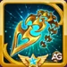
1st - Heartbreaker Artifact
When Peech uses Theater of Pain, Heartbreaker can grant the whole team +32,040 Armor for 9 seconds at maximum evolution. The defensive buff is valuable because Peech fights on the front line and needs time to establish her Relic effects.
Level 100 Stats: Armor +32,040; activation chance 100% at six stars.
Evolution Priority:Medium High - The team-wide protection is useful, but it does not directly increase Peech's Physical Attack formulas or help her penetrate enemy Armor.
2nd - Alchemist's Folio Artifact
Alchemist's Folio adds +10,680 Armor Penetration and +3,561 Physical Attack. Both stats directly support Peech's job: one raises her formulas, while the other helps her physical damage reach armored targets.
Evolution Priority:Very High - This is the strongest offensive artifact investment and should normally receive resources before the weapon and ring.
3rd - Ring of Agility Artifact
The Ring provides +3,990 Agility. Since Agility is Peech's main stat, that converts into +11,970 Physical Attack and +3,990 Armor, improving both her damage and front-line durability.
Evolution Priority:High - It gives an excellent mixture of offense and survival, but Armor Penetration from the book is usually the more urgent PvP upgrade.
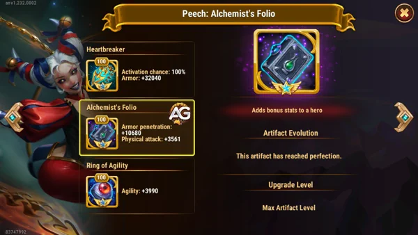
Peech Artifacts at maximum level, Hero Wars Alliance.
Peech Glyph Evolution Priority
Peech needs offensive glyphs to scale her Relics, but Health and Dodge still matter because a defeated front-line performer deals no damage.
1st Glyph - Physical Attack
Physical Attack strengthens every numerical formula in Peech's base kit and is also the scaling stat listed for Tragic Finale.
Level 80 Stats: Physical Attack +8,340.
Evolution Priority:Very High - This is her most direct and consistent damage upgrade.
2nd Glyph - Health
Health keeps Peech active on the front line long enough to apply Harlequin's Punishment, complete The Final Act, and spread Tragic Finale.
Level 80 Stats: Health +122,800.
Evolution Priority:High - Essential for consistency, especially when using the damage-focused Talisman of Actress.
3rd Glyph - Dodge
Dodge can prevent physical hits entirely, but it is less dependable than Health and does nothing against magical or pure damage.
Level 80 Stats: Dodge +4,170.
Evolution Priority:Medium - Useful against physical teams, but too matchup-dependent to outrank core damage and Health.
4th Glyph - Armor Penetration
Armor Penetration helps Peech's physical hits remain effective against tanks and other high-Armor targets selected by Harlequin's Punishment.
Level 80 Stats: Armor Penetration +12,850.
Evolution Priority:Very High - Upgrade it alongside Physical Attack; the visual fourth slot does not mean it should be your fourth investment.
5th Glyph - Agility
At Level 80, +2,110 Agility converts into +6,330 Physical Attack and +2,110 Armor because Agility is Peech's main stat.
Level 80 Stats: Agility +2,110.
Evolution Priority:High - A strong hybrid upgrade after direct Physical Attack and sufficient Armor Penetration.
Warrior Class Glyph: Regular attacks apply a 16.7-second effect that increases Physical Attack by 34,574.84 (8% Physical Attack + 26,325). Peech can hold up to six effects, so keeping her alive and attacking consistently has real value in extended fights.
Best Skin for Peech - Hero Wars Alliance
Singularity Skin+ helps Peech hit harder against armored enemies, while Stellar strengthens her attacks and skills. Add survival upgrades earlier if she is being defeated before she can keep up the pressure.
Recommended evolution order: Singularity Skin+ → Stellar → Mythical Skin+ → Default → Inner Demons → Romantic. The skins below follow the character data order; their priority numbers show the recommended upgrade order. Move Romantic earlier if Peech needs more Health to survive.
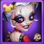
Default Skin - Agility
The Default Skin gives +1,365 Agility, which converts into +4,095 Physical Attack and +1,365 Armor for Peech.
Total Skin Stones: 30,825.
Evolution Priority:High — 4th - Build Agility after the main damage skins for a useful mix of Physical Attack and Armor.
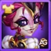
Romantic Skin - Health
Romantic Skin provides +106,645 Health. The extra Health helps her survive on the front line and stay in the fight long enough to use her skills.
Total Skin Stones: 50,410.
Evolution Priority:Situational — 6th - Move this skin earlier if Peech is dying before she can use her skills; staying alive takes priority over further damage upgrades.
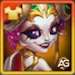
Mythical Skin+ - Crushing
Mythical Skin+ gives +11,840 Crushing, increasing all outgoing damage against enemies below 50% Health. The upgraded Skin+ version doubles the regular Mythical Skin's 5,920 Crushing bonus without increasing the normal skin-stone leveling cost.
Total Skin Stones: 50,410.
Evolution Priority:Very High — 3rd - Helps finish weakened enemies after Singularity and Stellar establish her core damage.
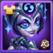
Stellar Skin - Physical Attack
Stellar Skin adds +7,095 Physical Attack, directly increasing Theater of Pain, Harlequin's Punishment, The Final Act, Stage Presence, normal attacks, and the listed scaling stat for Tragic Finale.
Total Skin Stones: 50,410.
Evolution Priority:Very High — 2nd - Strengthens her attacks and Physical Attack-based skills. Pair it with Singularity Skin+ for damage against armored opponents.
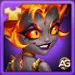
Inner Demons Skin - Crit Hit Chance
Inner Demons Skin grants +2,960 Crit Hit Chance, adding explosive potential to Peech's repeated direct hits and pairing naturally with Talisman of the Acrobat.
Total Skin Stones: 50,410.
Evolution Priority:High — 5th - Add critical hit potential once Armor Penetration and Physical Attack are established, especially with Talisman of the Acrobat.
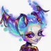
Singularity Skin+ - Armor Penetration
Singularity Skin+ helps Peech deal more physical damage to armored enemies. It is a strong choice when tough opponents are surviving her attacks, helping her maintain pressure and bring them down.
Level 60 Bonus: +21,300 Armor Penetration, double the normal skin's +10,650. The Skin+ bonus replaces the normal bonus; they do not stack.
Total Agility Skin Stones: 50,410.
Evolution Priority:Very High — 1st - Our first choice against armored opponents. Follow with Stellar to strengthen her attacks and skills.
Peech Synergy in Hero Wars Alliance
Peech is at her best when her starting lineup increases Theater of Pain's reach, strengthens Stage Presence, and keeps her alive long enough to spread Relic debuffs.
Aidan
Aidan is a Chaos ally, so he immediately improves Peech's faction-based range and damage bonuses. His sustain also helps a front-line Peech survive long enough to complete The Final Act and maintain Tragic Finale pressure.
Cleaver protects the front line and pulls distant enemies into a more vulnerable position. His disruption helps Peech's area attacks reach clustered targets, while both heroes contribute strongly to a full Chaos lineup.
Dorian gives Peech the sustain she needs in extended fights. As another Chaos ally, he also strengthens her starting faction bonuses without forcing the team away from its core identity.
Kayla adds aggressive physical pressure and counts as a Chaos ally in front of Peech, increasing both Theater of Pain's coverage and the stronger Chaos bonus from Stage Presence.
Kendle keeps the composition inside the Way of Chaos and supports the longer fights in which Peech can repeatedly apply her debuffs. Starting together also adds another 25% increment to Peech's faction-based coverage.
Xe'sha
Xe'sha is a Chaos magic damage dealer who can benefit when Harlequin's Punishment selects Magic Attack as her higher starting attack stat. Together they pressure different defenses while still maximizing Peech's Chaos bonuses.
Best Teams for Peech in 2026 - Hero Wars Alliance
Team 1 - Vampirism and Sustained Chaos
Aidan, Kendle, Dorian, Peech, Cleaver
This lineup gives Peech the time her new Relics need. Cleaver protects and disrupts the front line, Dorian provides Vampirism and sustain, and Aidan and Kendle preserve the Chaos core. Peech receives maximum value from her faction bonuses while Harlequin's Punishment and Tragic Finale keep weakening the enemy team.
This version exchanges Cleaver and Dorian for faster offensive pressure. Guus adds healing and critical support, Kayla attacks aggressively from the Chaos core, and Aidan helps the team survive. Peech supplies Armor reduction, attack amplification, control, and recurring Relic damage while Talisman of the Acrobat strengthens her critical potential and front-line survival.
These established lineups from the previous guide remain useful references. They are preserved here as popular community-style compositions rather than replacing the two current Relic-focused recommendations above.
Most Popular Defense Teams
Kayla, Dante, Peech, Aidan, Octavia
Astaroth, Tempus, Xe'sha, Peech, Aidan
Astaroth, Kayla, Xe'sha, Peech, Aidan
Julius, Kayla, Tempus, Peech, Aidan
Julius, Tristan, Kayla, Peech, Aidan
Krista, Soleil, Lars, Polaris, Peech
Astaroth, Krista, Soleil, Lars, Peech
Most Popular Attack Teams
Octavia, Aidan, Peech, Dante, Kayla
Aidan, Peech, Xe'sha, Tempus, Astaroth
Aidan, Peech, Xe'sha, Kayla, Astaroth
Aidan, Peech, Tempus, Kayla, Julius
Aidan, Peech, Kayla, Tristan, Julius
Peech, Polaris, Lars, Soleil, Krista
Peech, Lars, Soleil, Krista, Astaroth
⭐ Alexandre's Final Verdict on Peech
Peech's Legendary Relics give her the identity she was missing. She no longer relies only on one strong whip sequence: she can weaken two armored enemies, steal Physical Attack from two carries, and keep Tragic Finale circulating through direct hits. In a dedicated Chaos team, those mechanics reinforce one another beautifully.
My practical recommendation is to stop first at Relic Level 20. For 1,130 shards, Peech unlocks Tragic Finale and both multi-target enhancements. Level 30 is excellent for sustained damage, but its final 1,750-shard step should come after her core build is ready. Use Talisman of the Acrobat when survival and critical pressure matter most, or Actress when the team can safely support a maximum-damage build.
She still needs protection from control and focused front-line damage, so she is not a hero you can drop into every random lineup. Build around her Chaos bonuses, give her time to perform, and the enemy team may discover that the final act arrived much earlier than expected.
Video suggestion
Video: Hey, guys! Welcome back to Alexandre Games! Today, we’re breaking down everything about Peech, the newest meta-changing hero in Hero Wars Alliance! 💥
Video: Peech is the NEW META? Top 7 Teams to DOMINATE Hero Wars Alliance (You Won’t Believe #1!)
Did you like our Peech Guide for Hero Wars Mobile? Is there something you didn't understand or would like to suggest changes to? We invite you to join our comment section on the Alexandre Games Blog page. Feel free to express your opinion, clarify your doubts, and share your suggestions. Click the button below to get started:

 Intelligence
Intelligence Agility
Agility Strength
Strength Health
Health Physical Attack
Physical Attack Magic Attack
Magic Attack Armor
Armor Magic Defense
Magic Defense Dodge
Dodge Armor Penetration
Armor Penetration Crit Hit Chance
Crit Hit Chance Crushing
Crushing 280
280